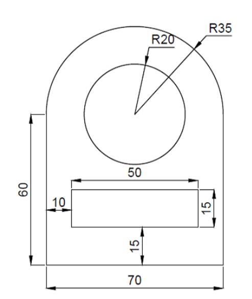

2D CAD
- What is 2D CAD? CAD stands for "Computer Aided Drawing" and as its name implies, it is the creation of designs / drawings on the computer. For 2D CAD, to put it simply, it's basically graphic design, as well as creating sketches for 3D models that will be used in CAD later on.
- A variety of software for 2D CAD exist, the most famous ones being Adobe Photoshop, Adobe Illustrator as well as programs such as AutoCAD.
- For this module, the programs we are going to be using for this section will be GIMP, Inkscape as well as Fusion 360.
Task 1
- For this task, we are supposed to edit a photo of ourselves using GIMP, an image editing program, and use that edited image for the About page of our website. The task is simple, and that will be to remove the background of the image and save it as a PNG with a transparent background.
- The first thing we will need to do is choose an image we are going to use for our About page. I decided to use this image of myself:
- After opening GIMP, we shall import the picture to edit it.
- I shall be following this Youtube tutorial to remove the background.
- To summarize, we are first going to use the Free Select tool to select the outline of the main subject, me. Then, using the subtract mode of the tool, we are going to select the areas we need to remove.
- We then invert the selection, which is now selecting the background. We are going to enable Alpha channel, which allows a transparent background to be made, then delete the background. We should be left with just the subject, and the background should now be gone and replaced with a greyish checkerboard pattern. This indicates that the image now has a transparent background.
- Instead of saving, we are going to export this edited image. We are going to choose the PNG option, then export it to the desired location. We should now have a PNG that is ready to be used for the page.
Task 2
- For this task, we are going to need to design a logo to use for the webpage and then vectorise it using Inkscape.
- As far as logo design went, I decided to use my initials. I drew a couple of designs until I found one satisfactory.
- We are now going to import the design into Inkscape. We can take a picture of the design, then import said picture into Inkscape and set it as a base layer. We are going to lower the opacity of that layer, then create a new layer for the vector itself.
- To create the vector, we are going to use the Bezier Curve pen. Since my design is largely made of lines, I can select the line setting for the pen.
- Using the pen, we are going to trace the entire design. Once done, we now have a vectorized logo! Since I am going to use it as a favicon, I resized it, then exported it as a PNG. We can also save it as a SVG file if we so choose.